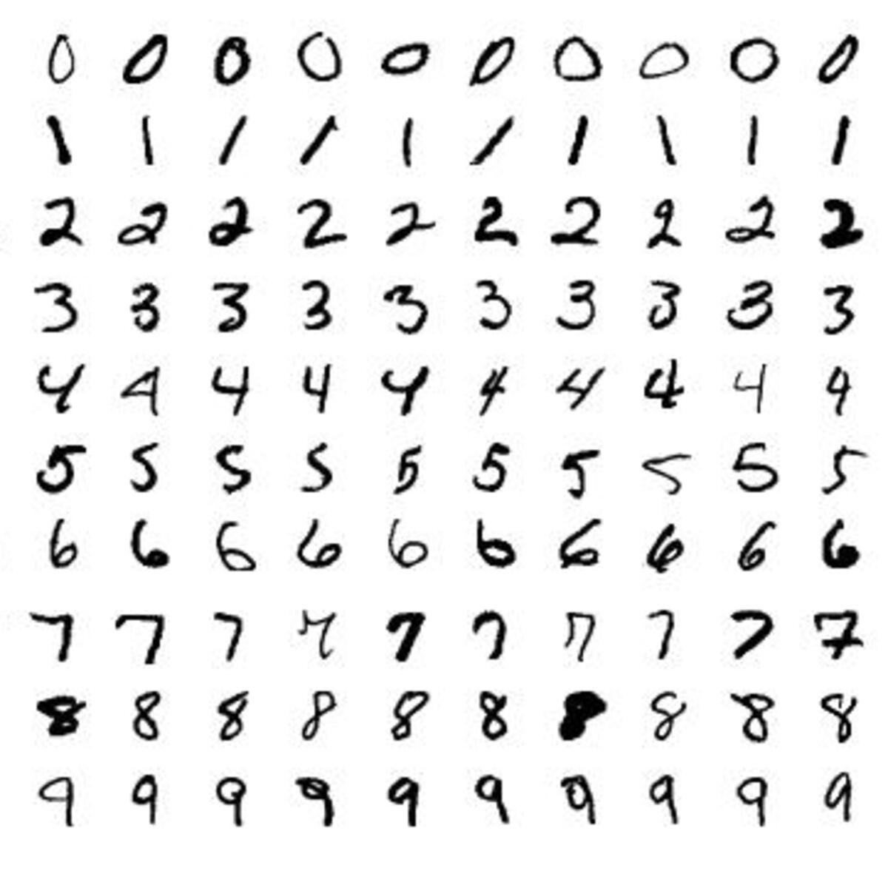
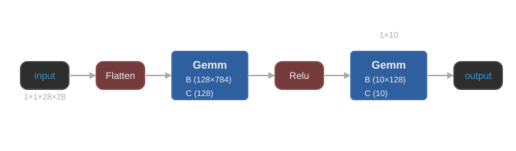
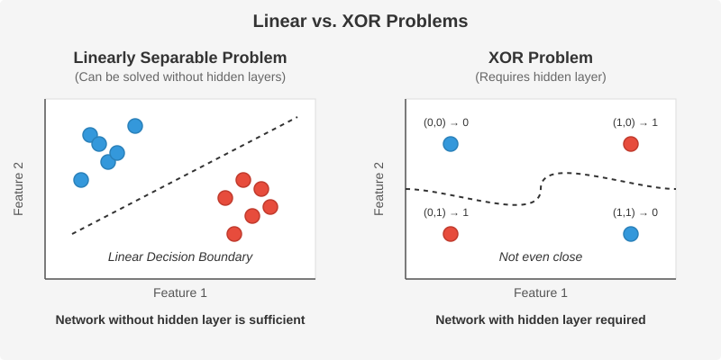
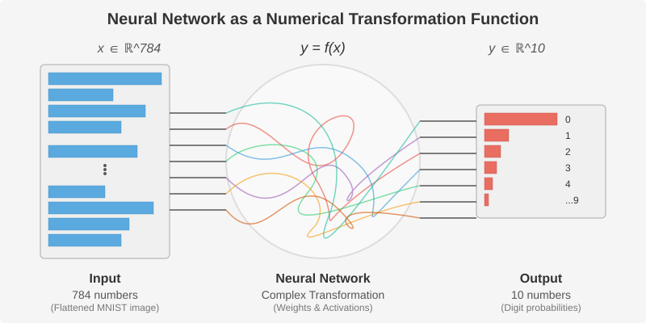

A vanilla MLP, trained on MNIST
Introduction
My hope with this plate is for you to come away with a feel for how the model's architecture works — and an understanding of what people are talking about when they reach for "neural network." It shouldn't be intimidating at all.
Remember what I said about how our brains do things effortlessly? Picture this:

A grid of sloppy digits, written by hand and rendered at a low resolution of just 28×28 pixels. Our brains can read them with no trouble at all (appreciate it, brain). Different handwriting, different thickness, different slant, different size, different color, different background — and we still associate this 7 or that 7 with the digit 7.
Is teaching a computer to do the same thing as easy as it is for us? Not quite.
This is a classic example, and there are many others like it — easy to hard — that you'll find at the bottom of this plate. There's also a notebook for it. Click the button up top, download the code, and play around with it.
More modern architectures handle this kind of task much better, but the vanilla MLP is still a good starting point: it shows how the machinery works without much background knowledge required.
What is an MLP?
An MLP (Multi-Layer Perceptron) is a type of neural network with multiple layers of neurons. You can call it a vanilla MLP because it's the most basic type of them all.
In case you missed it: I talked briefly about what a neuron is. A neuron holds a weight and a bias, takes an input, and produces an output.
In an MLP, all neurons are fully connected — every neuron in one layer is connected to every neuron in the next.

Our digit images are 28×28 pixels, which means each image has 784 pixels. Each pixel is a feature, and we can think of each image as a vector of 784 features. So the first layer of the MLP will have 784 neurons.
Each neuron in the first layer takes one of the 784 pixels as input and produces an output. The output of each neuron in the first layer is passed to the next layer, and so on.
The last layer has 10 neurons, one for each digit (0–9). The output of each is a probability from 0 to 1 — the likelihood that the input image belongs to that digit. The neuron with the highest probability wins.
Here's an ASCII sketch (thanks, Claude):
Input Layer Hidden Layer Output Layer
(784 neurons) (128 neurons) (10 neurons)
[Image] O O (0)
28×28 O O (1)
| O O (2)
v O O (3)
O O O (4)
O ------→ O ------→ O (5)
O O O (6)
O O O (7)
O O O (8)
: : O (9)
Flattened ReLU Activation Softmax
Input Output
W: 128×784 W: 10×128
b: 128 b: 10
I have one hidden layer with 128 neurons, but you can have as many hidden layers as you want, as many neurons as you want — there's plenty of room for experimentation.
Even for our small 784 → 128 → 10 architecture, that's 784×128 + 128×10 = 100,352 parameters just for a 28×28 image.
Why "Hidden" Layer?
If the neurons in the first layer take the input image and the neurons in the last layer produce the final output, what are the neurons in the middle doing? For fun? For the sake of innovation?
Of course not. The neurons in the middle are doing the heavy lifting.
Without hidden layers, a neural network is just a linear model — like logistic regression. A linear model can only learn linear relationships between input and output, which means it can only separate the input space with a straight line (or hyperplane in higher dimensions).

The XOR problem is the classic example of a problem a linear model can't solve. A network without hidden layers can't handle it. One with even a single hidden layer can.
Benefits of hidden layers
Hidden layers are crucial in neural networks for a few fundamental reasons:
- Non-linear function approximation. Hidden layers with non-linear activations (like ReLU) let the network learn complex, non-linear relationships in the data.
- Feature extraction. The hidden layers automatically learn useful features from raw input. Early layers might detect edges and simple patterns; deeper layers combine those into more complex shapes (like the digit classification we're doing).
- Representation learning. They transform the input space into new representations where classification becomes easier — a feature space where different classes are more separable.
- Hierarchical pattern recognition. Each hidden layer builds on the previous one, forming a hierarchy of increasingly abstract representations.
As for why they're called "hidden" — that's just what people called them in the early days of neural networks. The reasoning: they aren't visible to the outside world, since they're neither input nor output.
In short, hidden layers are the backbone of neural networks. They allow the network to learn complex, non-linear relationships and to extract useful features from raw input automatically. The math gets more involved than this, but I've written it up in more detail in the GitHub repo and in the first plate of this series.
For the result: training completed in 63.94 seconds with a final accuracy of 97.66% on the test set. About a minute.
Epoch [1/5], Train Loss: 0.2858, Train Accuracy: 91.70%, Test Accuracy: 95.62% Epoch [2/5], Train Loss: 0.1252, Train Accuracy: 96.31%, Test Accuracy: 96.75% Epoch [3/5], Train Loss: 0.0864, Train Accuracy: 97.36%, Test Accuracy: 96.80% Epoch [4/5], Train Loss: 0.0668, Train Accuracy: 97.94%, Test Accuracy: 97.48% Epoch [5/5], Train Loss: 0.0515, Train Accuracy: 98.39%, Test Accuracy: 97.66% Training completed in 63.94 seconds
The Neural Network is just a Function
I'll retrace my words and say it again.
Despite all the biological terminology, a neuron in a neural network is just a mathematical function — a building block. And a neural network, despite its biological inspiration and complex architecture, is fundamentally just a big mathematical function that transforms a set of input numbers into a set of output numbers through a complex, tangled process of weighted combinations and non-linear transformations.

For me, this framing is reassuring in two ways:
- It demystifies the whole thing. It's just a function, and we can understand it.
- It can be complicated, and that's good. It means we can be creative with it to solve bigger problems — which, of course, is what we've been doing all along.
What's next?
Next up: the Convolutional Neural Network, or CNN, and how it handles the spatial structure of images.
If you're wondering why MLPs lead to CNNs in the first place, here's a short detour:
Why MLPs Lead to CNNs
MLPs are flexible and can be used generally to learn a mapping from inputs to outputs. If time is on your side, you can use, try, and modify them for almost any task. But that flexibility also means they aren't the best at any one task.
When we flatten a 28×28 MNIST image into a 784-dimensional vector, we destroy the spatial structure of the image. The MLP has no regard for adjacency — it treats every pixel as an independent feature. That's not the best way to learn from images, since pixels close together are usually related.
For tasks like image recognition, spatial relationships between features (edges, textures, shapes) are crucial.
Convolutional Neural Networks were designed exactly for image data — and they've become the go-to approach for prediction problems where image data is the input, thanks to their effectiveness. You can read more about CNNs in Jason Brownlee's crash course, or see when to reach for MLP vs CNN vs RNN.
For the inspiration trail: this YouTube video was my main starting point, and this book on neural networks and deep learning is also worth a look.